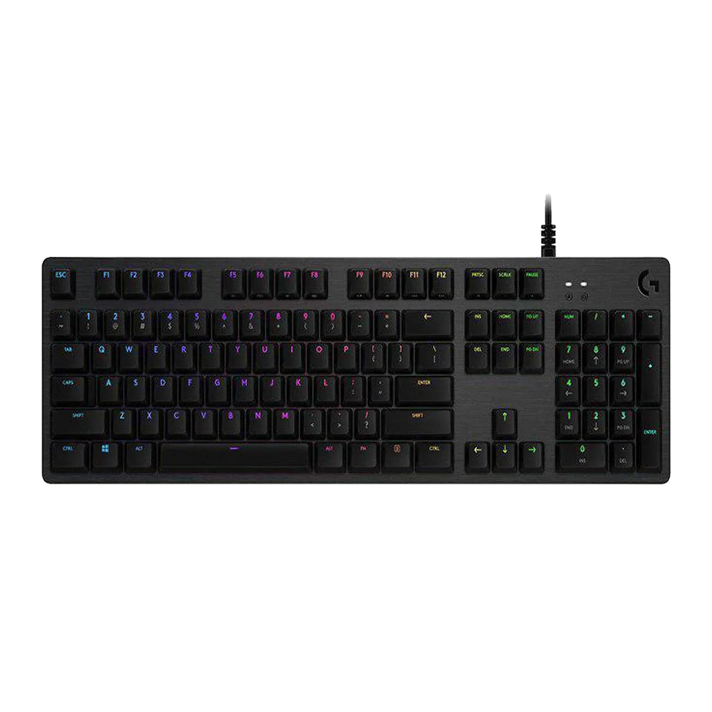

Trang Chủ
Tin Công nghệ
Liên hệ
About us
Đối tác

Bàn phím Logitech G512 GX
Nhà sản xuất: Logitech
Switch: GX Blue (Clicky)
Bảo hành: 24 tháng
Led : RGB
Giá bán: 2,090,000 VNĐ
Mô tả sản phẩm
G512 GX
Độ dài: 132 mm
Chiều rộng: 445 mm
Chiều cao: 35,5 mm
Trọng lượng (không tính dây): 1130 g
Độ dài dây cáp: 1,8 m
Loại kết nối: USB 2.0
Giao thức USB: USB 2.0
Cổng USB (Tích hợp): Có, 2.0
Đèn chỉ báo (LED): 2
Chiếu sáng nền: Có, chiếu sáng RGB cho mỗi phím
CÁC PHÍM ĐẶC BIỆT
Điều khiển ánh sáng: FN+F5/F6/F7
Chế độ chơi game: FN+F8
Điều khiển phương tiện: FN+F9/F10/F11/F12
Điều khiển âm lượng: FN+ PRTSC/SCRLK/PAUSE
Các phím FN có thể lập trình qua HUB G của Logitech
YÊU CÂÙ
Windows 10, Window 8.1, Windows 8, or Windows 7
Cổng USB (cho bàn phím)
Cổng USB thứ hai (để làm cổng truyền dữ liệu qua USB)
(Tùy chọn) Khả năng truy cập Internet cho HU G của Logitech